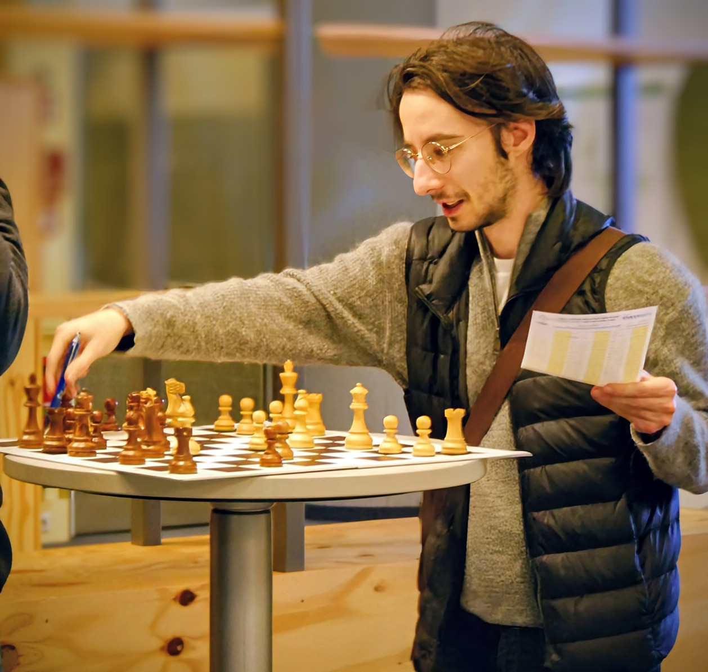

Hi, I am Erin Sprünken — a statistician and researcher based in Berlin. I hold a Master's Degree in Statistics (M.Sc.) from Humboldt-Universität zu Berlin and am currently completing my PhD in Health Data Sciences at the Institute of Biometry and Clinical Epidemiology of Charité – Universitätsmedizin Berlin, where I also work as a Research Associate.
My work sits at the intersection of methodological statistics and applied biomedical research. I develop and apply nonparametric rank-based methods for complex data structures and work closely with clinicians on a broad range of research questions. I teach statistics across several programs at Charité – Universitätsmedizin Berlin, Humboldt-Universität zu Berlin, and Freie Universität Berlin.
| Since 06/2021 | Research Associate Institute of Biometry, Charité – Universitätsmedizin Berlin |
| 01/2019 – 07/2021 | Student Research Assistant Chair of Statistics, Humboldt-Universität zu Berlin |
| 10/2018 – 12/2018 | Intern M&A, Transaction Advisory, EY |
| 03/2017 – 09/2018 | Student Research Assistant Institute of Finance, Humboldt-Universität zu Berlin |
| 08/2014 – 03/2017 | Apprentice, Bank Clerk (from 08/2016) Private and Business Clients, Deutsche Bank |
| Since 10/2023 | PhD Health Data Sciences Charité – Universitätsmedizin Berlin |
| 10/2019 – 04/2022 | M.Sc. Statistics Humboldt-Universität zu Berlin |
| 10/2016 – 09/2019 | B.Sc. Economics Humboldt-Universität zu Berlin |
| 06/2013 | Abitur (Equivalent of A-Levels) Josef-Hofmiller-Gymnasium |
Memberships
International Biometric Society (IBS)
Deutsche Gesellschaft für Medizinische Informatik, Biometrie und Epidemiologie (GMDS) e.V.
Reviewing
Committees & Commissions
Animal Trial Commission, Landesamt für Gesundheit und Soziales (LaGeSo) Berlin
Outside of work, I have a fairly eclectic mix of interests. I play drums and have a broad taste in music that tends to follow wherever the rhythm leads. Chess is another passion — I compete at amateur level and enjoy the strategic depth the game offers. I'm also an avid reader and a lifelong Star Wars enthusiast, spanning the films, series, and expanded universe.
I enjoy traveling and experiencing different cultures, and try to make the most of the opportunities that come with working in an internationally connected field.
The picture below shows me at the German Amateur Cup (DSAM) in January 2026.
